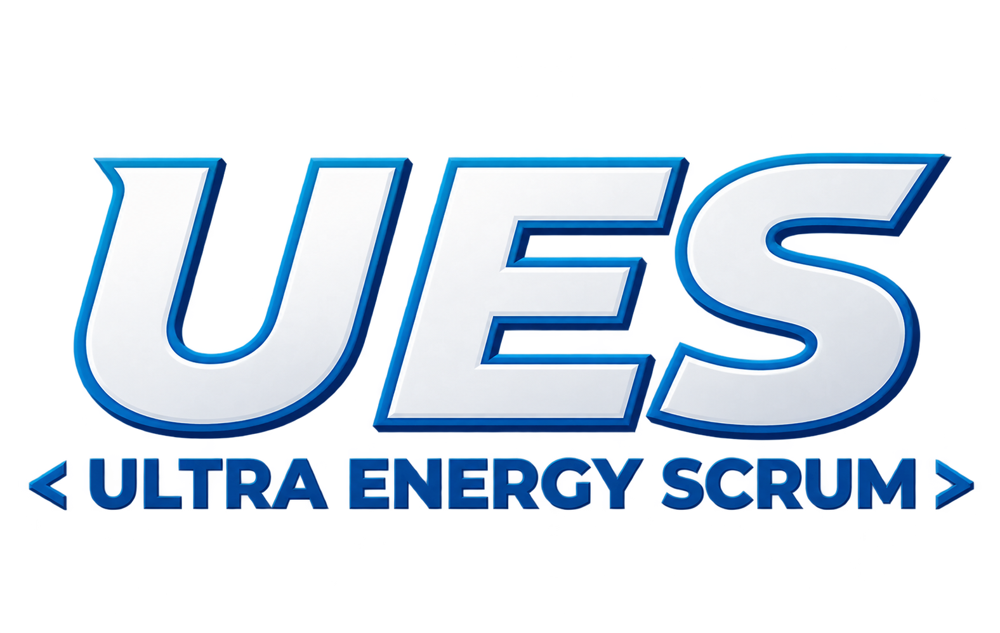

</>
Pruebas Unitarias
Verifican el correcto funcionamiento de componentes o unidades individuales del código.
Se realizan para comprobar que cada parte del programa funcione correctamente por separado.

Conocé los niveles y tipos de pruebas para garantizar la calidad del software.
Verifican el correcto funcionamiento de componentes o unidades individuales del código.
Se realizan para comprobar que cada parte del programa funcione correctamente por separado.
Validan la interacción entre diferentes módulos o componentes del sistema.
Comprueban que los módulos puedan comunicarse correctamente y trabajar juntos.
Evalúan el funcionamiento completo del sistema desde la perspectiva del usuario final.
Se prueba el programa completo para verificar que cumpla con los requisitos establecidos.
Se enfocan en verificar el comportamiento externo del sistema sin conocer su estructura interna.
Se ingresan datos y se comprueban los resultados para ver si el programa funciona como se espera.
Se enfocan en verificar la estructura interna del código, analizando el flujo de ejecución, las condiciones y la cobertura del código.
Se revisa el código para comprobar las instrucciones, condiciones y caminos que puede seguir el programa.